Overview
Two products. One story.
This project spans two inter-related products that together tell a much more cohesive story. The Wealth Management Storefront gives members a clear understanding of what wealth management is at USAA, why it matters, and whether they qualify. The Wealth Management Hub digitally augments the advice experience: members can view and update their plan, see their complete financial picture, schedule appointments with an advisor, and run what-if scenarios.

Background
Financial security for every member
"The mission of the association is to facilitate the financial security of its members, associates, and their families through provision of a full range of highly competitive financial products and services."
— USAA Mission
Sticking true to that mission, USAA was opening up eligibility for wealth management and financial advice services to a broader pool of membership. The belief: no matter how much money a member has, they are entitled to financial advice. To understand how to provide a better 1:1 financial advice experience, the best place to begin was by asking members.
The Ask
A nicer homepage. And so much more.
The business asked us to create a better wealth management experience as they expanded eligibility to a larger pool of members. That was it. What they really wanted was a nicer-looking homepage for wealth management. A big part of this project was identifying the problems that design could actually help solve, by speaking directly with members, and communicating that value back to the business.
My Role
Leading UX design and research
My role on this project was leading UX design and research. Visual design was handled by Madisson Staires and John Fransella.
Audit
An utter lack of focus
The current USAA wealth management page was a complete mess. No focus on information architecture, content, or hierarchy. Even when members found the page, they still didn't understand what it was communicating. It told you nothing about what wealth management actually is, and then prompted members to "Get Started."
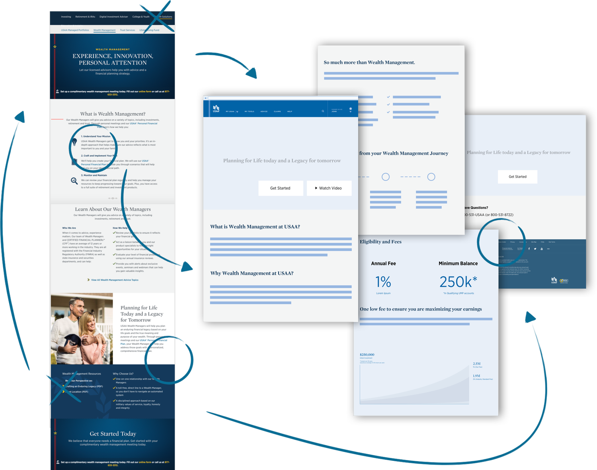
"I don't like going to USAA wealth management homepage, there usually isn't a lot there."
— Jennifer, Wealth Management Member
"I would have something in the back of my head. Want to see all the benefits and choices."
— Lilian, Prospective Wealth Management Member
Research Process
Starting with members
We brought members into the design studio at both generative and evaluative stages of research. The goal was to understand their current mental model of their finances and identify gaps in understanding or experience. We began by documenting our assumptions and what we understood to be true, alongside a competitive market evaluation, to shape what questions to ask.

At the generative stage, we aimed to understand the mental models members held and validate (or dispel) our assumptions. We had 12 members come in for the generative phase. Given my experience conducting research at IBM, I was the primary point person for the interviews.
Synthesis
From 42 themes to design principles
Key utterances from members were used to form themes across our research. We landed on about 42 themes. To make that information actionable, we synthesized them into design principles that drove concepting. These principles became the primary criteria for evaluating which concepts to test with members.
Pain-points also helped drive value statement building with our business partners and laid the foundation for concept creation.
Problem
A gap in awareness and acquisition
Research with both USAA members and USAA advisors surfaced a significant gap in the awareness and acquisition phase of the 1:1 relationship journey. Members were often unaware of USAA's wealth management services, couldn't find information about the service, and when they did find it, it wasn't helpful.
Members in long-standing wealth management relationships expressed that following the 70-page plan an advisor lays out is incredibly hard. They wanted something they could track digitally to stay on course.
Mapping the Journey
Building the ideal experience with business partners
We mapped out what the ideal wealth management and financial advice journey should look like based on our research. Pain-points were overlaid (as transparent red circles) to make them contextually understood. Complementary to the pain-points, we mapped design fundamentals that could help alleviate areas of friction.

Value statements helped design align with partners. Because they're placed in context of a journey, they also allow for measurability of success across each phase. Only then did we begin mapping capabilities that we believed would enable member success at every stage: alleviating pain-points, aligning to value statements, and driven by contextual design fundamentals.

Concepting
Mapping concepts along the journey
We didn't show members all of our concepts (not even close). But one way to narrow down the 8–10 we did test was to first map all concepts along the journey. This ensured that what we showed members was representational of the full experience, addressing different phases and pain-points rather than clustering at one moment.
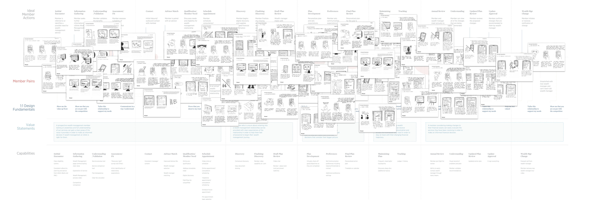
Concept Zoom
Surprises in testing
Two concepts stood out for how differently they tested versus expectations. The business had stressed how paramount video chat was, especially after closing financial centers. When we spoke to 12 members, nearly everyone rated its value fairly low. A handful said the only video that would be helpful was screen-sharing, so advisors could walk them through specific tasks.
Future-Casting was another surprise. The concept uses member spending data (with permission) to predict life events like a new addition to the family or a potential job loss, then automatically adjusts the plan accordingly. This was a genuinely mixed bag. Members found some scenarios deeply unsettling (like predicting divorce). But a scenario where the system detects a potential job loss and automatically readjusts a plan? Members responded really positively. It came down entirely to content strategy around the system's contextual awareness.
For all concepts we used the Jobs to Be Done format, focused on what the member is operationally trying to achieve at each step.
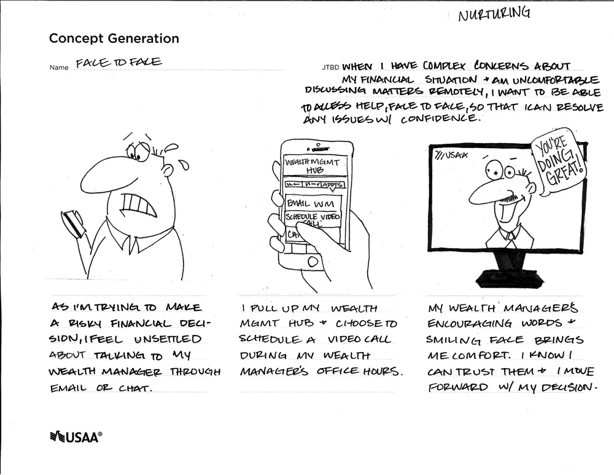
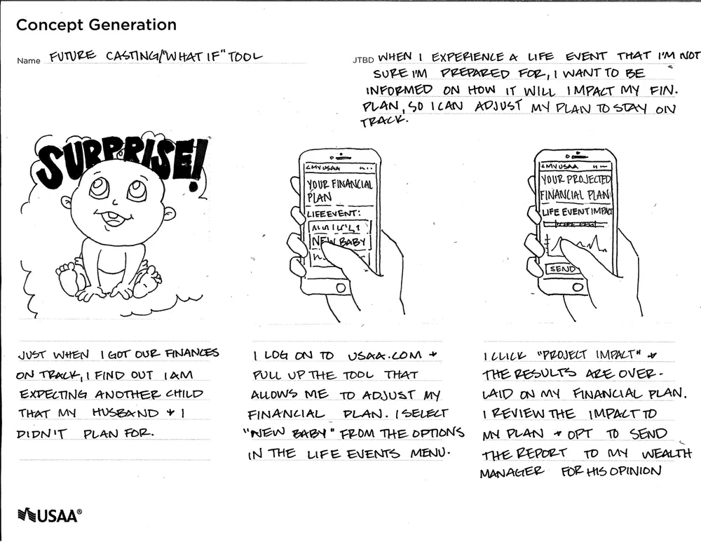
What Resonated
Digital Action Plan and Exploring the Hub
Two concepts carried directly into the final design: the Digital Action Plan and Exploring the Hub. Both emerged from generative research. Members who used wealth management loved their relationship with their advisor, but tracking progress and staying on top of goals was nearly impossible once the call ended. There was no digital artifact supporting the experience, so the plan remained an abstraction.
Those conversations gave design the fuel to make the argument with the business: the storefront redesign was only half the picture. This needed a digital augmentation that went beyond what was legally required.
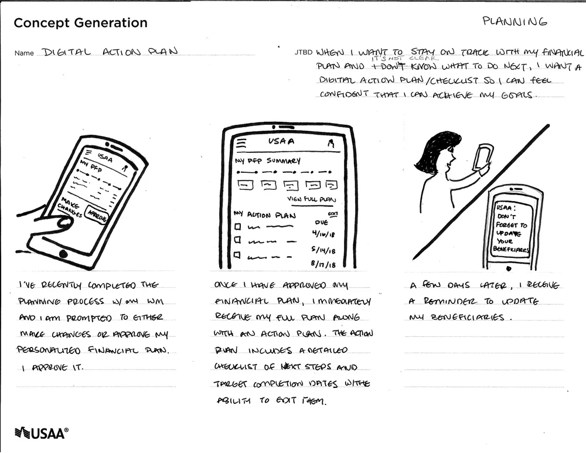
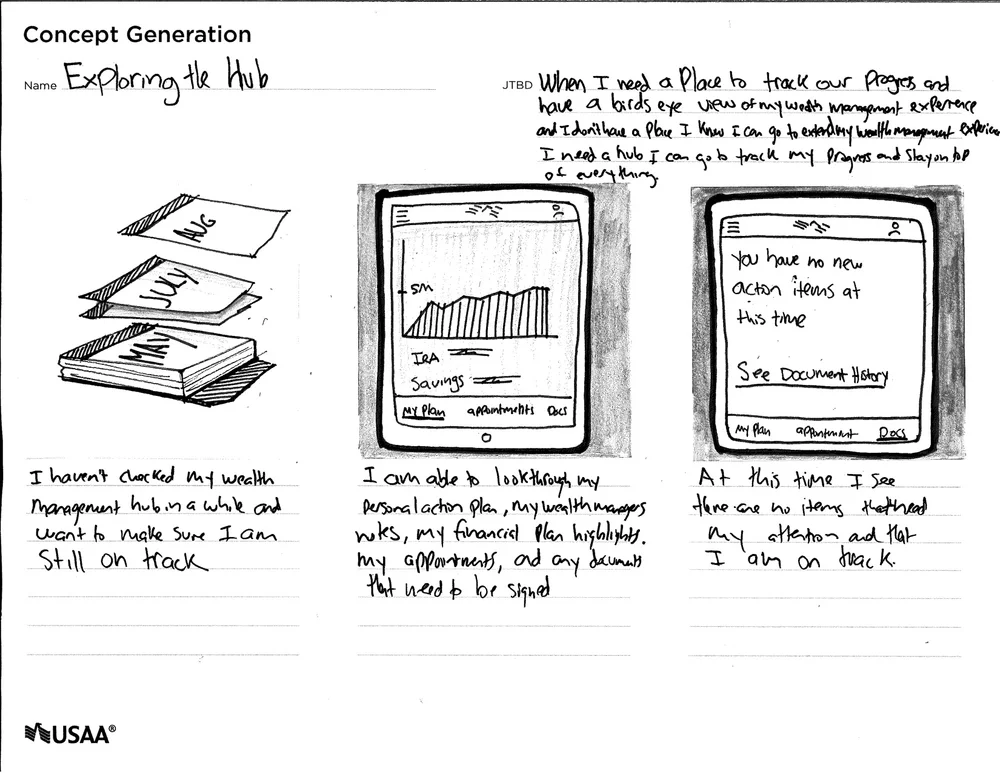
From Design Thinking to Design Doing
A two-part solution
What members needed was two things working together:
- A storefront that is not only easy to find, but that clearly articulates the value financial advice provides for their personal financial situation. Most members don't know what wealth management is, let alone why it matters or how it fits into their bigger financial picture.
- Once they enter into a financial advice relationship, a way to digitally augment the experience they're receiving over the phone. USAA is recognized as best-in-class in customer service, yet their digital experiences fell drastically short, creating deeply inconsistent and incongruous moments.
System Architecture
Designing the system before the screens
Before a single high-fidelity frame gets made, you have to deeply understand the basic flow and architecture of what you're building. Skipping this step is how you end up with beautiful screens that don't actually work together. Getting the structure right first means the design decisions downstream have a foundation to stand on.
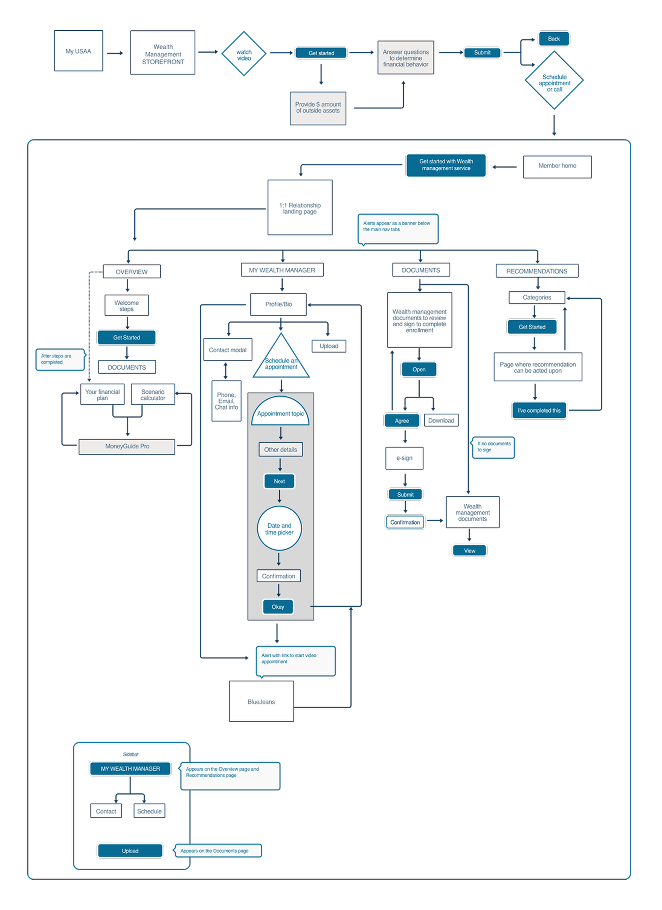
Wealth Management Storefront
Hierarchy, clarity, and fee transparency
The most apparent fix was better page architecture with a clear value proposition: more information-hierarchical, fee-transparent, and honestly, one that didn't hurt to look at. This was one of two pieces needed to create a more cohesive experience.
Low Fidelity
Starting with paper
I start every initial ideation phase with paper and pen. The industrial designer in me never went away. A handful of rough sketches before jumping to the computer. Sketching lets me do quick explorations of ideas that might feel a little out there, without using a single megabyte.
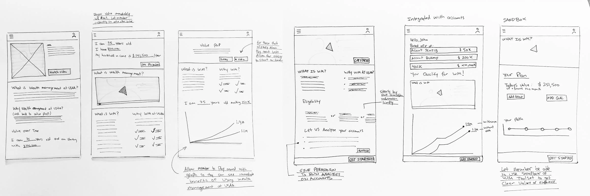
First Release
The initial design
There's still functionality to be added to this experience. The most immediate need was page architecture and clarity. In the current build, we've identified areas for interaction augmentation. In some of those early sketches, I captured the need for an onboarding and sandbox feature that would both showcase capability and immediately put members in the headspace of planning. Those upgrades are coming next cycle.
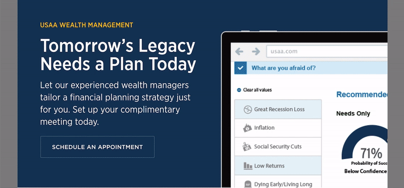

Wealth Management Hub
Digitally augmenting the advice experience
One of the biggest problems we uncovered: members have an amazing experience with a wealth manager on the phone, but the moment that call ends, there's nothing to sustain it digitally. Progress is nearly impossible to track. The plan remains an abstraction. A 70-page document that sits in a drawer.
We found that life events continuously drive the need to revise plans. In the past, that meant calling the advisor, walking through everything, making changes, and receiving a new document. One key feature of the hub is giving members the ability to run what-if scenarios and play with their numbers. If a simulation resonates, they can send it to their advisor to review. This cuts down an enormous amount of time, shifts half of the experience to something members can do on their own terms, and transforms something that's incredibly formal into something empowering. Giving members the ability to play with their own financial situation digitally facilitates real comprehension of their finances.

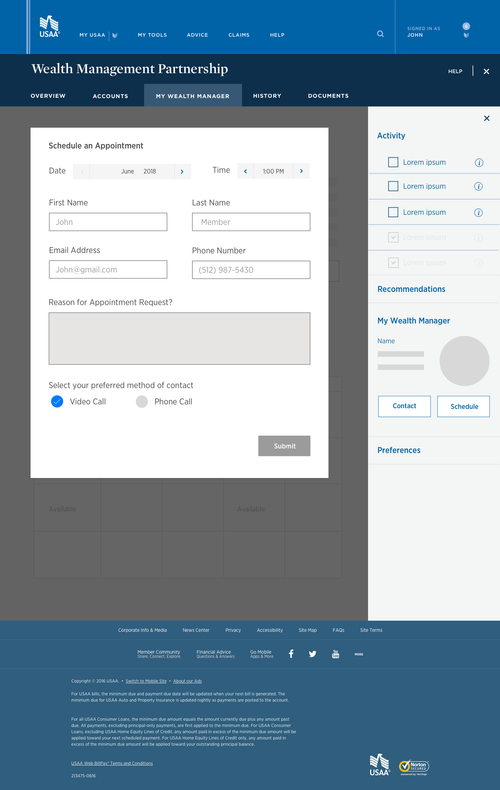
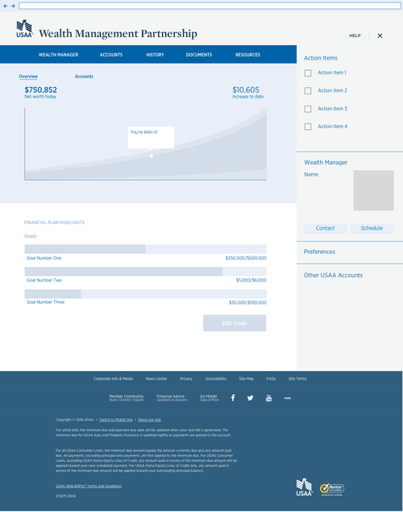
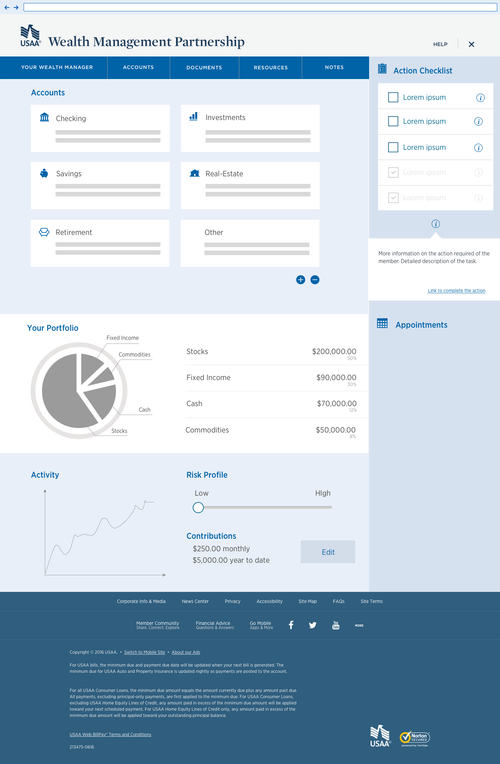

Integrations
Making it personal
The next iteration of the storefront includes a few key additions. To make the experience more cognitively accessible, we're including an animated explanatory video. Members we spoke to consistently expressed the value video provides for comprehension.
In continuing efforts to personalize the experience, we're integrating a member's financial data so USAA can immediately surface the service that best fits them. In the interim, we're building an integrated survey to guide members through the process of understanding which service is right for their situation.
Next Steps
Expanding the experience
For the storefront, the next steps focus on a more integrative experience with the member's USAA account, making it easier to inform them of their eligibility. Leveraging a robust onboarding and sandbox trial experience is central to expanding this to broader membership, helping members feel empowered to take ownership of their finances and taking as much legwork away from advisors as the experience can accommodate digitally.
For the Wealth Management Hub, the next step is rolling it out to a select group of members and conducting in-house user testing.